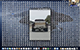

2Big Data
Familiar in a Weird Way
A Conversation with Caleb Flowers
[Recording begins mid-conversation, we're talking about writing versus images with regards to Caleb's substack newsletter]
CF
00:00:00,630 --> 00:00:07,480
I've had issues like trying to figure out how to convey your thoughts and get him into words and have the same message come across.So with images, I've been able to do that a little bit better because it's more like open to interpretation. But I also realize that sometimes I lose a lot... I kind of leave a lot of the messaging on the table. I think writing is super powerful in that way, and it's something that I wish I knew how to do better. Or just storytelling in general.
CH
00:00:39,710 --> 00:00:48,410
There's so much there to talk about, there's like this. First of all, we're at a point in our image literacy where we don't need text necessarily. With those images you sent [in your substack] you're already in a way writing in that you're creating a series of images, you're right. And then the other thing is like, [...] we're at a ripe moment for exploring those gray zones between image and text, using image and text.
CF
00:02:08,140 --> 00:02:13,210
Maybe silent era movies are coming back in...CDs too. You know what I mean? Because maybe we were talking too much, like, maybe there's too much communication. My whole goal with the Substack is like, OK, I don't know how to write. Let me just see if I can convey it with photos. And so far so good. I've actually had way more fun. I'm kind of like, [how about] don't write unless I really feel I need to say something.
CH
00:02:31,300 --> 00:02:39,130
Writing can also be a bit hazardous too now.
CF
00:02:39,130 --> 00:02:46,110
Totally. You got to, like, write everything in invisible ink.
CH
00:02:46,110 --> 00:02:50,350
Haha, totally.
CF
00:02:50,350 --> 00:02:58,780
That [reminds me of] when I started doing all the Big Data* stuff. One of the things I couldn't find, but I know has to exist is…well, let me go backwards a little bit. If you download all these images and these words and these ideas, you might not want them forever and they might clog up people's computers. But also, at the same time, I kind of wanted there to be a sense of urgency– [capturing] a specific moment in time that– if you wanted to keep it– you could. But if you didn't, it would automatically destruct. So I was looking for a file that had a shelf life. Or, if you saw something you wanted to keep, you could throw it into the uh, the… what’s it called?
CH
The refrigerator?
CF
00:03:38,630 --> 00:03:43,310
Yeah, the refrigerator. Or the pantry. And all the rest automatically go to the recycle bin and delete. I’m sure it's out there.
CH
00:03:51,380 --> 00:03:58,700
That’s a great idea.
CF
00:03:58,700 --> 00:04:04,160
I love the idea that just maybe not everything's out there all the time.
CH
00:04:04,160 --> 00:04:08,660
Yeah, yeah. I mean, kind of like planned obsolescence. Which has kind of a bad rap… it generates an untenable amount of waste. It’s way more complicated than I’m qualified to get into. But the idea…there's something pretty beautiful about how it sort of mandates a kind of change. And how this refresh of physical objects creates nostalgia for the previous version. Thinking about the rounded corners of the iPhone.
CF
00:06:19,580 --> 00:06:26,810
Totally. I love stories, I love products, and I love product stories. I’m almost convinced people rolling product out is just a giant hero story. The product gets [iterated on], and then it gets to come back. You know what I mean? Like the hero's journey of the iPhone. It's like, hey, we need to stay at this shape because it's clearly the best…
CH
That’s hilarious.
CF
00:06:32,510 --> 00:06:41,600
…but to stay here, we have to leave for a moment. That will allow us to tell the story… to demonstrate how we have the humility to return back to the best shape. And we’ll sell all these phones along the way.
CH
00:06:41,600 --> 00:06:46,400
It’s the Odyssey.
CF
00:06:46,400 --> 00:06:49,880
Haha, totally. Every product story is basically like “Hey, we overbuilt it, but we learned from our mistakes and we're continually evolving, and we’re back [at this shape] even though we could have use kept going.” You know what I mean?
CH
Haha, completely.
A few minutes elapse where we discuss the iPhone, the Volkswagen Tiguan and LL Bean.
CH
00:09:40,350 --> 00:09:46,140
So back to the refrigerator analogy… it happens to be a good transition to my vision for this interview. I had a moment with an interiors/ lifestyle magazine the other day, one that usually inspires me that I'm exccited to dig into, where I thought... well, this is all very beautiful, but I would rather see these peoples' phones, or computers, or browser tabs. Another kind of interior. There's a metaphor there, it's kind of low-hanging fruit. But there it is... what would that house tour look like? Which brings me to: will you take me on a tour of your computer? Anything really… your desktop, your Finder, your tabs, wherever you’re saving stuff. Kind of the refrigerator, if you will.
CF
Let's do it. How about this... can you see my screen?
Screen sharing is enabled. Caleb's desktop materializes suddenly; the Zoom window has automatically expanded and eclipsed the screen. A thick layer of gridded micro-icons blankets an image of what looks like a mountaneous peninsula with small islands sprinkled off its coast. The thumbnail icons, evenly spaced, are illegible and, in some cases, stacked.
CF
Most of my stuff is in the finder. This is just the spillover. Sometimes I'll clean it up.
He "cleans up" the desktop area, and the grid is rejiggered. The cursor lands on a thumbnail in the upper left corner of the screen, highlighting it blue. An image of a truck appears in the middle of the screen. It is brown or maroon, with dual rear wheels and a sort of plywood and steel makeshift tailgate. The taillights, and license plate, are missing.
CF
This almost needs a disclaimer because I'm not sure what you're gonna find in here. Here's some old autographed Jamal Wilton's.
CF
00:10:33,510 --> 00:10:38,310
Yeah, yeah, I think. And let me just make sure I understand the concept. You want to take a deeper dive into these people's lives, but not so much their physical world, but the intangible/ ideas world… and you want to try to understand what these other spaces actually feel like by talking about them?
103
00:10:53,550 --> 00:11:03,360
Exactly.
CF
So the polished and unpolished, where the interesting kind of nuts and bolts are, the spaces in-between, the scuff marks, what's getting scuffed, what books end up in their room versus in the living room, where they’re reading…where they're more comfortable, like whether they’re all lying in their bed or if they’re entertaining in their living room.

Here's some old autographed Jamal Wilton's.
Here's some old autographed Jamal Wilton's.